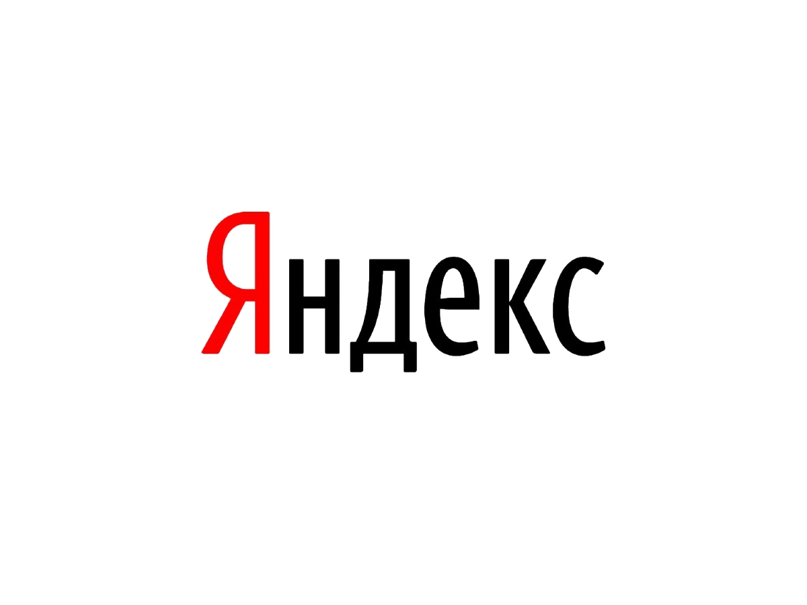
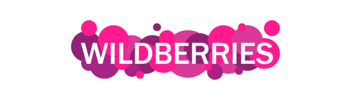
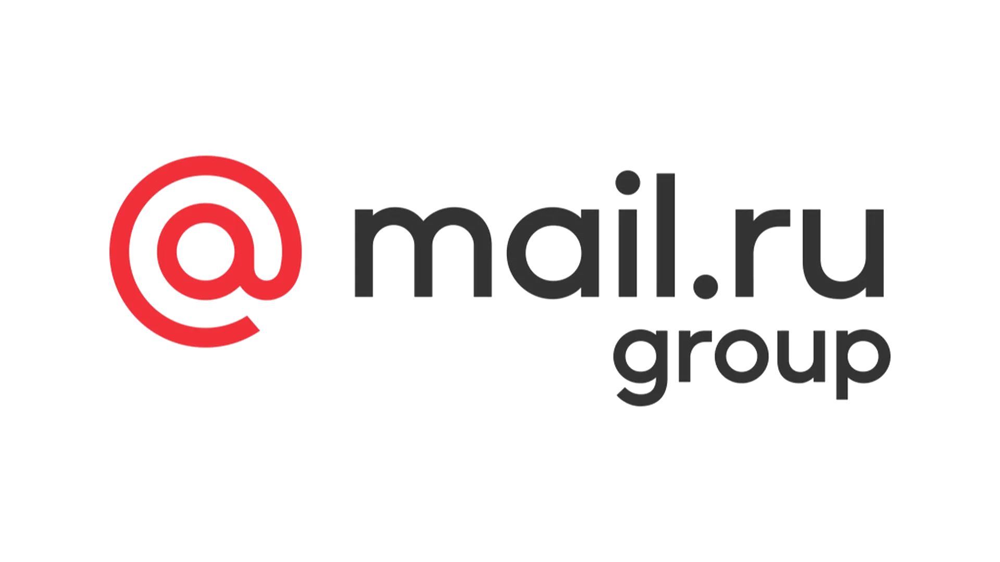
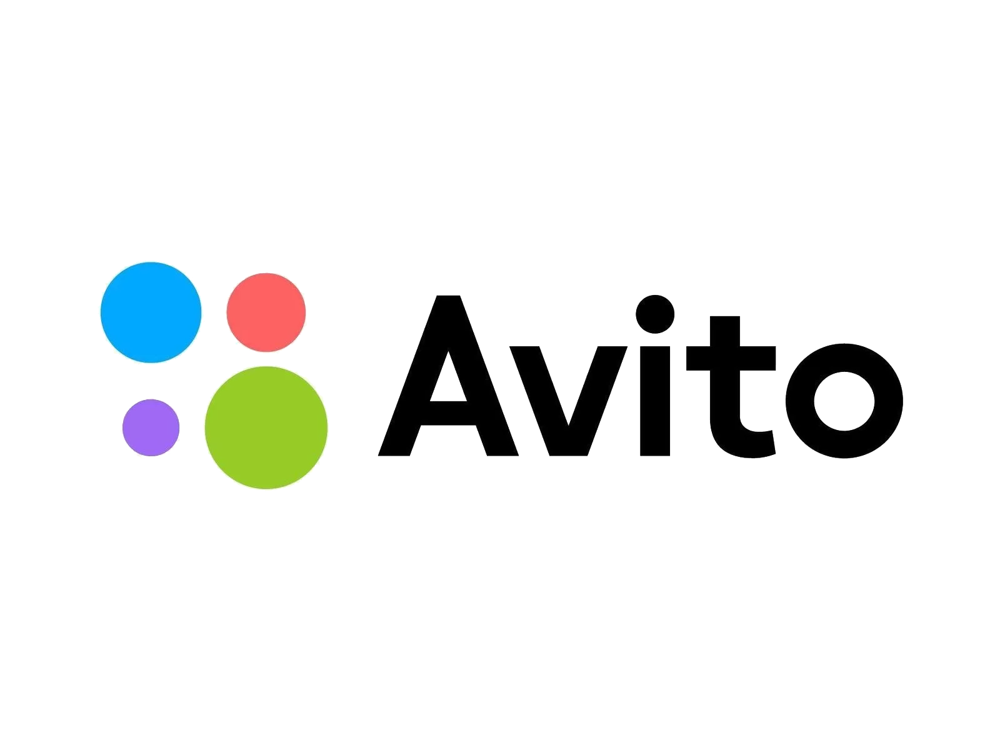

1 Яндекс
2020 год был насыщенным для «Яндекса». В апреле компания предупредила о том, что отзывает финансовый прогноз, так как не может прогнозировать влияние пандемии на бизнес. В июне закончилось 11-летнее партнерство «Яндекса» со «Сбером» — компании разделили активы, и «Яндекс» продолжил самостоятельно развивать «Яндекс.Маркет». IT-компания также договорилась о покупке с Тинькофф Банком, но в результате сделка на $5,5 млрд развалилась через 25 дней после объявления о переговорах.
Руководитель: Аркадий Волож
Год основания: 2000
Стоимость: $22 980 млн

2 Wildberries
Основанная в начале 2000-х годов компания Wildberries начинала с продажи одежды по каталогам. Сейчас это полноценный маркетплейс в Рунете, в его ассортименте более 5 млн товаров. Основатели, супруги Бакальчук, однажды признались Forbes, что никогда не предполагали, что создадут суперпроект. Оборот их компании по итогам 2020 года составил 437,2 млрд рублей (+96% за год), и он неуклонно растет, в том числе за счет роста числа поставщиков и увеличения ассортимента.
Руководитель: Татьяна Бакальчук
Год основания: 2004
Стоимость: $14 523 млн

3 Ozon
Один из старейших интернет-магазинов России провел фантастическое IPO в 2020-м. В начале ноября Ozon сообщил о планах разместить акции на Nasdaq, а 24 ноября начались торги, и акции в первые же часы подорожали на 30–40%. Ozon привлек $1,2 млрд на IPO, доля новых инвесторов достигла 18,2%, а доли крупнейших акционеров, АФК «Система» и Baring Vostok, снизились до 33,1% и 33% соответственно. На Ozon продается 9 млн товаров как собственных, так и сторонних продавцов, оборот в 2020 году — 194,5 млрд рублей, по оценке Forbes.
Руководитель: Александр Шульгин
Год основания: 1998
Стоимость: $10 581 млн

4 Mail Group
В 2020-м Mail.ru Group купила доли в нескольких проектах, чей бизнес быстро рос в пандемию. Компания стала совладельцем образовательной платформы для школьников «Учи.ру», купив 25% за 3,75 млрд рублей. Из-за спроса на онлайн-обучение Mail.ru Group выкупила 45% платформы для онлайн-подготовки к ЕГЭ «Тетрика». Сумму сделки стороны не раскрывали. В сентябре IT-компания вместе со «Сбером» стала владельцем 80,19% сервиса по доставке еды «Кухня на районе». Сумма сделки также не раскрывалась.
Руководитель: Борис Добродеев
Год основания: 1998
Стоимость: $6084 млн

5 Avito
Крупнейший сайт бесплатных объявлений в России основали предприниматели из Швеции Йонас Нордландер и Филип Энгельберт. В начале февраля 2021 года на сайте было размещено 72,5 млн объявлений, за год их количество выросло на 12,4 млн. В минуту на сайте заключается 120 сделок. Выручка в 2020 году, по данным компании, составила 29 млрд рублей, увеличившись за год на 20%. Компания в прошлом году получила чистую прибыль в размере 10,6 млрд рублей.
Руководитель: Владимир Правдивый
Год основания: 2007
Стоимость: $4907 млн
